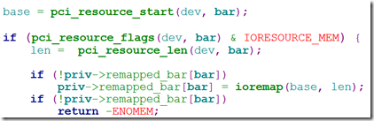

PCI串口编程
一、硬件环境
硬件开发环境是PCI9054+FPGA，16串口或8串口。
软件开发平台则是linux、VxWorks。
主要是运用在工控领域，在一般商用平台可能用不到这玩意。
二、PCI相关知识
PCI相关知识主要是参考了网上一些前辈写的博文，这里将其贴出来，以免后来人继续收集。
PCI 总线学习笔记-PCI9054 http://blog.csdn.net/lg2lh/article/details/8042008
PCI设备的地址空间 http://www.cnblogs.com/zszmhd/archive/2012/05/08/2490105.html
另外《linux设备驱动开发详解》（宋宝华）也有附带讲一些PCI驱动的编程，可以去瞄一瞄。
第一篇博文主要是介绍PCI9054的相关信息，知道这个片子是怎么做的，以及其是如何将FPGA和PC机连接起来，熟悉硬件原理。在实际的编程中，我们可能根本感觉不到这个片子，作为一个“桥片”，操作系统其实都已经将厂商的驱动给集成了，并不会说还需要我们来进行过多的编程。
第二篇博文具体内容很重要，是PCI设备的特性属性，但作为使用者，其实我们用到的只是PCI的地址空间，其他的暂时不用理会，PCI地址空间即是系统在启动时，PCI设备向CPU大佬申请的一段独有的地址空间以供自己使用，这段地址的相关信息也就存储在PCI配置空间的BAR(Base Address Registers)中。
在linux中，需要调用相关的API函数就能将BAR的信息取出进行使用了。
三、编程相关信息
Linux中，PCI设备的编程其实和普通设备的编程很相似，没有什么特别不同，主要的不同应该是映射PCI设备的地址空间。
UART设备，在编程中使用uart_register_driver注册tty设备，同时使用platform_driver_register注册平台总线。PCI-UART则是一实际总线，所以在注册时，我们选择注册为实际的总线——pci_register_driver。（参考Linux xr17v35x.c）
xr_uart_driver为驱动特殊的信息，xrserial_pci_driver为驱动匹配提供操作方法，在probe方法中，对串口相关资源进行初始化（还未对硬件进行相关设置），为该设备关联文件操作方法（uart_ops）。
先来看看probe中主要做的事情。
在一个pci设备可以被使用之前，必须调用pci_enable_device进行激活，该函数会调用底层代码激活PCI设备上的I/O和内存，使之可用。而pci_disable_device所做的事情刚好相反，告诉系统该PCI设备不再使用，同时，禁用相关的一些资源。
经过一系列调用进入函数setup_port。

图中的bar是在xrpciserial_boards数组中flags指定，此处是BAR0。（根据实际产品来，比如，我这里是BAR2）
若是我们的硬件没有预先跟软件这边说，那软件这边有能力得到这个信息吗？答案肯定是可以的。可以使用pci_select_bars来确定该PCI设备是否有申请到地址空间。（若没有肯定是有错误了）
1 | bars = pci_select_bars(pdev, IORESOURCE_MEM); |
返回值若是0x5，则是代表BAR0，BAR2满足select条件的，其条件就是函数的第二个参数IORESOURCE_MEM，因为PCI设备申请的地址空间有两种访问方式，一个是MEM，另一个是以IO方式访问，（第二篇博文中有介绍）。
这个时候我们可以使用这个返回值来映射这些BAR，若PCI设备使用了BAR0，那软件就使用BAR0去操作特定的内存地址（寄存器）就可以了，一个PCI设备一般不会使用很多BAR的，最多一两个就不得了了，要那么多，FPGA那边也受不了。
当然，有一些是强制性的就指定了该设备是使用哪一个BAR作为内存映射的基址，其他的BAR则是用于自定义用途，那软件这边强制性映射BAR0就好了。
看图片上，其实还调用了一个ioremap，BAR中的基址是属于物理地址的，软件想直接访问物理地址是做不到，那么，就需要使用ioremap将物理地址转化为虚拟地址，以供软件来使用。映射完后，使用priv->remapped_bar[bar]就可以来操作设备上的寄存器了。
分析完setup后（其实上面主要的工作是内存映射，其他的代码比较繁琐，在实际编程中可以适当简洁）。
进入serialxr_register_port。
填充 uart_port 结构体。
填充ops操作方法，也就是在应用层在使用open、write等，底层驱动最终会被调用的方法。使用uart_add_one_port将驱动与串口链接到一起，这样，在应用层操作/dev/tty*时，相应的ops就会被调用了。
到这里，probe函数大体就完成了，再之后的工作就是对ops的接口进行实现了，这里其实就可以参考一般串口设备到底在干嘛了，例如参考S3C2440的串口驱动。
参考至http://blog.csdn.net/lizuobin2/article/details/51773305。
1 | struct uart_ops { |
特别说明下，其中set_termios，与串口数据，流控开关，以及波特率设置相关。应用层若需要操控这些格式或者是打开流控等，需要使用tcgetattr函数得到对应串口的termios结构体。通过tcsetattr函数将设置后termios结构体传递给对应的串口。
startup则与open函数相关，在串口进行open操作时，上层会调用uart_open（serial_core.c），然后调用打开的设备的文件操作函数方法的startup。shutdown则与之相对。
ioctl则是支持一些该串口特殊的操作（若没有，则不设置就可以了）。
config_port是在驱动调用uart_add_one_port，链接驱动和串口端口时就被调用的一个函数，这个函数调用的真是早啊，主要的作用也是做一些在串口还没打开时需要处理的一些事，例如，设置串口的模式（232\485\422）。
大概就是这些了，其实VxWorks的驱动与之类似，可以参考vxbTemplateSio.c或者是templateSio.c，应该不会遇到啥比较可怕的大坑 。
另外需要注意的是VxWorks映射PCI BAR空间的问题，这些个代码网上有很多，可以去直接搜索下，不必去从源码上扣，别人已经整理出来了，我们就不必要花这个功夫了呗！
本文标题：PCI串口编程
文章作者：小师
发布时间：2017-11-03
最后更新：2022-05-04
原始链接：chunlife.top/2017/11/03/PCI串口编程/
版权声明：本站所有文章均采用知识共享署名4.0国际许可协议进行许可